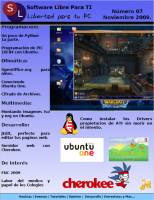

Esta página contiene enlaces a los números publicados de la revista Software Libre para TI en 2009 - 2007 - 2006.
Página web: Revista Software Libre para TI

Software Libre para TI
Número 7 - 2009 noviembre
Descarga (PDF 8.7 MB, español)
Número 6 - 2009 octubre
Descarga (PDF 5.4 MB, español)
Número 5 - 2007 junio
Descarga (PDF 7.5 MB, español)
Número 4 - 2007 febrero
Descarga (PDF 4.2 MB, español)
Número 3 - 2006 octubre
Descarga (PDF 3.0 MB, español)
Número 2 - 2006 agosto
Descarga (PDF 2.5 MB, español)
Número 1 - 2006 julio
Descarga (PDF 3.1 MB, español)